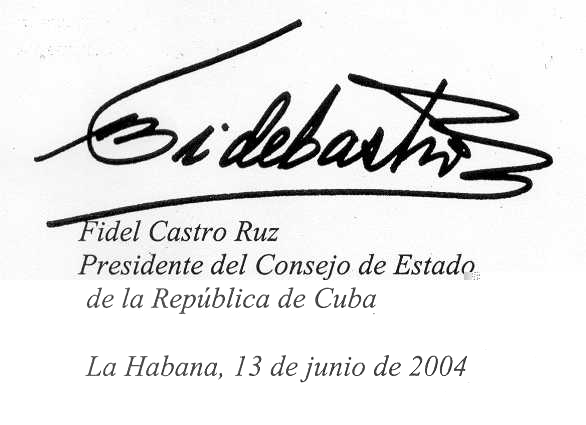

Mensaje a la XI Conferencia de las Naciones Unidas sobre el Comercio y el Desarrollo.
La UNCTAD, organización fundada hace 40 años, fue un noble intento del mundo subdesarrollado por crear en el seno de las Naciones Unidas, a través de un comercio internacional racional y justo, un instrumento que sirviera a sus aspiraciones de progreso y desarrollo. Entonces las esperanzas eran muchas, bajo la ingenua creencia de que las antiguas metrópolis habían adquirido conciencia del deber y la necesidad de compartir ese objetivo.
Fue Raúl Prebisch el principal inspirador de aquella idea. Él había analizado el fenómeno del intercambio desigual como una de las grandes tragedias que obstruían el desarrollo económico de los pueblos del Tercer Mundo. Fue este uno de sus aportes más importantes a la cultura económica de nuestra época. En reconocimiento a sus relevantes cualidades, fue elegido el primer Secretario General de esta institución de Naciones Unidas sobre comercio y desarrollo.
Hoy el terrible flagelo del intercambio desigual apenas se menciona en discursos y conferencias.
El comercio internacional no ha sido instrumento para el desarrollo de los países pobres, que constituyen la inmensa mayoría de la humanidad. Para 86 de ellos los productos básicos representan más de la mitad de los ingresos por exportaciones. El poder de compra de esos productos, excepto el petróleo, es hoy menos de la tercera parte del que tenía al crearse la UNCTAD.
Aunque las cifras aburren y se repiten, no queda muchas veces otro remedio que usar su elocuente e insustituible lenguaje.
A los países pobres se les prometió ayuda al desarrollo y que el abismo entre ricos y pobres se reduciría progresivamente; hasta llegó a prometerse que el monto alcanzaría el 0,7 por ciento del llamado PIB de los desarrollados económicamente, cifra que, de ser así, ascendería hoy a no menos de 175 mil millones de dólares por año.
Lo que el Tercer Mundo recibió como ayuda oficial al desarrollo el pasado año 2003 fue 54 mil millones de dólares. Ese mismo año los pobres pagaron a los ricos 436 mil millones por servicio de la deuda. El más rico de ellos, Estados Unidos, es el que menos cumplió la meta trazada, al destinar a esa ayuda sólo el 0,1 por ciento de su PIB. No se incluyen las enormes sumas que les arrebataron como consecuencia del intercambio desigual.
Adicionalmente, los países ricos gastan cada año más de 300 mil millones de dólares para pagar subsidios que impiden el acceso de las exportaciones de los países pobres a sus mercados.
Por otro lado, es casi imposible medir el daño ocasionado a esos países por el tipo de relaciones comerciales que, a través de los senderos sinuosos de la OMC y los tratados de libre comercio, se imponen a los países pobres, incapaces de competir con la tecnología sofisticada, el monopolio casi total de la propiedad intelectual y los inmensos recursos financieros de los países ricos.
A estas formas de saqueo se añaden otras, como la grosera explotación de la mano de obra barata con maquiladoras que llegan y se marchan a la velocidad de la luz, la especulación con las monedas al ritmo de millones de millones de dólares cada día, el comercio de armas, el apoderamiento de bienes del patrimonio nacional, la invasión cultural y otras decenas de acciones de pillaje y robo imposibles de enumerar. Está por estudiar, ya que no aparece en los libros clásicos de economía, la más brutal transferencia de recursos financieros de los países pobres a los países ricos: la fuga de capital, que es característica y obligatoria del orden económico reinante.
El dinero de todo el mundo se fuga hacia Estados Unidos para protegerse de la inestabilidad monetaria y la fiebre especulativa que el propio orden económico provoca. Sin ese regalo, que el resto del mundo, fundamentalmente los países pobres, le hacen a Estados Unidos, su actual administración no podría sostener los enormes déficit fiscal y comercial, que ascienden entre ambos en el año 2004 a no menos de un millón de millones de dólares.
¿Alguien se atrevería a negar las consecuencias sociales y humanas de la globalización neoliberal impuesta al mundo?
¿Cómo pueden los líderes del imperialismo y los que comparten con él el saqueo del mundo hablar de derechos humanos y mencionar siquiera las palabras libertad y democracia en este mundo tan brutalmente explotado?
Lo que se practica contra la humanidad es un crimen permanente de genocidio. Cada año mueren por falta de alimentos, atención médica y medicamentos, tantos niños, madres, adolescentes, jóvenes y adultos salvables como las decenas de millones que murieron en cualquiera de las dos Guerras Mundiales. Esto ocurre todos los días, a todas horas, sin que ninguno de los grandes líderes del mundo desarrollado y rico dedique a ello una sola palabra.
¿Podrá continuar indefinidamente esta situación? Decididamente no, y por razones absolutamente objetivas.
La humanidad, después de transcurridos decenas de miles de años, ha llegado en este minuto, y casi de repente, dado el ritmo acelerado de los últimos 45 años en que su monto más que se duplicó, a 6.350 millones de habitantes, que necesitan ser vestidos, calzados, alimentados, albergados y educados. La cifra ascenderá casi inevitablemente a 10 mil millones en apenas 50 años más. No existirán ya para esa fecha las reservas de combustible probadas y probables que el planeta tardó 300 millones de años en crear. Habrán sido lanzadas a la atmósfera, las aguas y los suelos, junto a otros productos químicos contaminantes.
El sistema imperialista que hoy impera, hacia el que inevitablemente fue evolucionando la sociedad capitalista desarrollada, arribó ya a un orden económico global y neoliberal tan despiadadamente irracional e injusto, que es insostenible. Contra él los pueblos se rebelarán. Ya han comenzado a rebelarse. Son estúpidos los que afirman que esto es fruto de partidos, ideologías o agentes subversivos y desestabilizadores de Cuba y Venezuela. Entre otras cosas esta evolución trajo consigo, de forma igualmente inevitable dentro de las bases y normas que rigen el sistema imperante, las llamadas sociedades de consumo. En ellas, sus tendencias despilfarradoras e irresponsables han envenenado las mentes de gran número de personas en el mundo, las que en medio de una ignorancia política y económica generalizada son manipuladas por la publicidad comercial y política a través de los fabulosos medios masivos que la ciencia ha creado.
No han sido estas las condiciones más propicias para el desarrollo, en los países ricos y poderosos, de líderes capaces, responsables y dotados de los conocimientos y los principios políticos y éticos que un mundo tan extremadamente complejo requiere. No hay que culparlos, porque ellos mismos han sido frutos y a la vez instrumentos ciegos de aquella evolución. ¿Serán capaces de manejar con responsabilidad las situaciones políticas sumamente complicadas que en número creciente surgen en el mundo?
Pronto se cumplirán 60 años del día en que estalló sobre Hiroshima la primera bomba nuclear. Hoy en el mundo existen decenas de miles de esas armas, que son decenas de veces más poderosas y precisas.
Se siguen produciendo y perfeccionando. Hasta en el espacio se programan bases de proyectiles nucleares. Nuevos sistemas de mortíferos y sofisticados armamentos surgen.
Por primera vez en la historia el hombre habría creado la capacidad técnica para su total autodestrucción. No ha sido en cambio capaz de crear un mínimo de garantías para la seguridad e integridad de todos los países por igual. Se elaboran, e incluso se aplican teorías relativas al uso preventivo y sorpresivo de las armas más sofisticadas "en cualquier oscuro rincón del mundo", "en 60 o más países", que hacen palidecer la barbarie proclamada en los días tenebrosos del nazismo. Hemos sido ya testigos de guerras de conquista y sádicos métodos de tortura que recuerdan las imágenes divulgadas en los días finales de la Segunda Guerra Mundial.
El prestigio de las Naciones Unidas está siendo socavado hasta los cimientos. Lejos de perfeccionarse y democratizarse, la institución ha ido quedando como un instrumento que la superpotencia y sus aliados pretenden usar únicamente para cohonestar aventuras bélicas y crímenes espantosos contra los derechos más sagrados de los pueblos.
No se trata de fantasías ni productos de la imaginación. Es muy real el hecho de que, en apenas medio siglo, han surgido dos grandes y mortales peligros para la propia supervivencia de la especie: el que emana del desarrollo tecnológico de las armas, y el que viene de la destrucción sistemática y acelerada de las condiciones naturales para la vida en el planeta.
En la disyuntiva a que ha sido arrastrada por el sistema, no hay otra alternativa para la humanidad: o la actual situación mundial cambia, o la especie corre el riesgo real de extinción. Para comprenderlo no hay que ser científico o experto en matemáticas; basta la aritmética que se ofrece a los niños en la enseñanza primaria.
Los pueblos se harán ingobernables. No existen métodos represivos, torturas, desapariciones ni asesinatos masivos que puedan impedirlo. Y en la lucha por la supervivencia, la de sus hijos y los hijos de sus hijos, estarán no sólo los hambrientos del Tercer Mundo; estarán igualmente todas las personas conscientes del mundo rico, sean trabajadores manuales o sean trabajadores intelectuales.
De la crisis inevitable, y mucho más temprano que tarde, saldrán pensadores, guías, organizaciones sociales y políticas de la más diversa índole que harán el máximo esfuerzo por preservar la especie. Todas las aguas se unirán en una sola dirección para barrer obstáculos.
Sembremos ideas, y todas las armas que esta civilización bárbara ha creado sobrarán; sembremos ideas, y la destrucción irremediable de nuestro medio natural de vida podrá impedirse.
Cabría preguntarse, si no es ya demasiado tarde. Soy optimista, digo que no, y comparto la esperanza de que un mundo mejor es posible.
